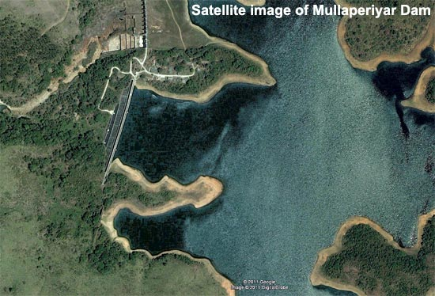

The Mullaperiyar Dam
Water flow

The Periyar river which flows westward of kerala Arabian sea was diverted eastwards to flow towards the Bay of Bengal to provide water to the arid rain shadow region of Madurai in Madras Presidency which was in dire need of a greater supply of water than the small Vaigai River could provide. The dam created the Periyar Thekkady reservoir, from which water was diverted eastwards via a tunnel to augment the small flow of the Vaigai River. The Vaigai was dammed by the Vaigai Dam to provide a source for irrigating large tracts around Madurai. Initially the dam waters were used only for the irrigation of 68,558 ha (169,411 acres).
Currently, the water from the Periyar (Thekkady) Lake created by the dam, is diverted through the water shed cutting and a subterranean tunnel to Forebay Dam near Kumily (Errachipalam) in Tamil Nadu. From the Forebay dam, hydel pipe lines carry the water to the Periyar Power Station in Lower Periyar, Tamil Nadu. This is used for power generation (175 MW capacity) in the Periyar Power Station. From the Periyar Power Station, the water is let out into Vairavanar river and then to Suruliyar and from Suruliyar to Vaigai Dam.